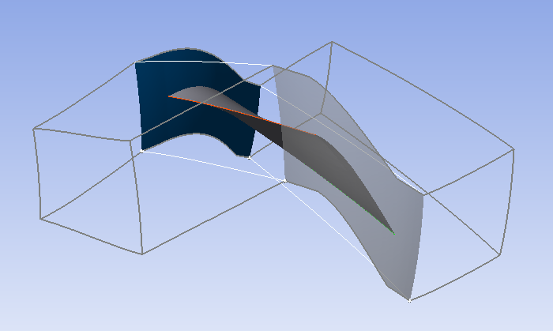

Note
Go to the end to download the full example code.
Basic mesh generation#
This basic example shows how to launch PyTurboGrid, load a blade model by reading an INF file, and generate a mesh.
Model overview#
{kind=link}
Perform required imports#
Perform the required imports. It is assumed that the ansys-turbogrid-core
package has been installed.
import json
import os.path as ospath
from ansys.turbogrid.core.launcher.launcher import get_turbogrid_exe_path, launch_turbogrid
Launch TurboGrid instance#
Launch a TurboGrid instance in the most basic way.
turbogrid = launch_turbogrid()
Find TurboGrid examples#
Find the examples folder for TurboGrid based on the path to the directory
where it is installed. Calling the get_turbogrid_exe_path() method ensures
use of the examples folder in the current TurboGrid installation.
exec_path = get_turbogrid_exe_path()
turbogrid_install_location = "/".join(exec_path.parts[:-2])
turbogrid_install_location = turbogrid_install_location.replace("\\", "")
examples_path_str = turbogrid_install_location + "/examples"
Ensure folder with examples exists#
Ensure that the examples folder exists.
if not ospath.isdir(examples_path_str):
print("examples folder not found in the TurboGrid installation")
exit()
Read file for rotor37 example#
Read the BladeGen INF file for the rotor37 example.
turbogrid.read_inf(examples_path_str + "/rotor37/BladeGen.inf")
Generate mesh#
Generate a mesh with the default settings.
turbogrid.unsuspend(object="/TOPOLOGY SET")
Get mesh statistics#
Get the mesh statistics from the current session.
stats = turbogrid.query_mesh_statistics()
Print mesh statistics#
Print the mesh statistics in a format suitable for reading. A JSON serializer can print nested dictionary content with indentation and formatting.
print("Mesh statistics:", json.dumps(stats, indent=2))
Save mesh#
Save the mesh.
turbogrid.save_mesh(filename="rotor37.gtm")
Quit session#
Quit the TurboGrid session.
turbogrid.quit()